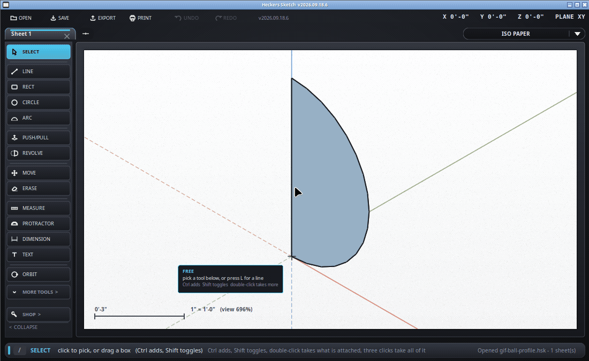
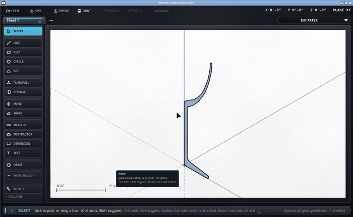

Draw half of a round thing, spin it, and it is solid.
No letter of its own - /revolve, or pick it from the strip on
the left. This is SketchUp's Follow Me under a name that says what it
does; /followme still works if that is the word you know.
Anything round on a lathe - a ball, a bowl, a glass, a knob, a pipe flange - is one flat outline turned about a line. You draw the outline beside the line, and this spins it.

/right or /front
looks straight at an upright plane, which is where a profile belongs -
standing up, not lying on the floor./revolve.The ring the preview draws is what it is about to sweep. Red means the axis cuts through the outline, which cannot make a solid: move the axis to the edge of the shape, not through the middle of it.
Same three clicks, a longer outline. Draw it as the glass in section: up the outside, over the rim, back down the inside, and in to the axis at the bottom of the bowl. What the outline encloses is the glass, so the hollow comes out hollow.

The wine glass in examples/ is this drawing - open it and take
it apart.
| What you see | What it means |
|---|---|
| The preview ring is red | The axis crosses the outline. Spin about a line at the edge of the shape. |
| Nothing happens when you click the shape | It is lines, not a face. A closed outline fills in by itself; an open one does not. |
| It comes out banded, like a barrel | The outline is too coarse - every corner in it becomes a crease. Draw curves with more segments; see below. |
| The middle is solid and should be hollow | The outline has to come back down the inside. A single line up one side gives a solid of that shape. |
Click a circle instead of an axis and the face follows that circle round - which is how a ring, a torus or a round handrail gets made. Any closed outline works as the path.
Type an angle before the last click and it stops there: 90 for
a quarter, 180 for a half. A pipe elbow is a circle swept a
quarter turn about an axis off to one side of it.
Two things decide it. Across the turn it is the number of gores -
24 unless you say otherwise, the same setting the circle tool uses
(+ and -, or type 48s). Along the
outline it is how many segments you drew the curve with: a bowl drawn with
three points has three creases in it, and one drawn with ten is smooth. A
gentle bend in the outline is softened for you; a real corner stays a
corner.